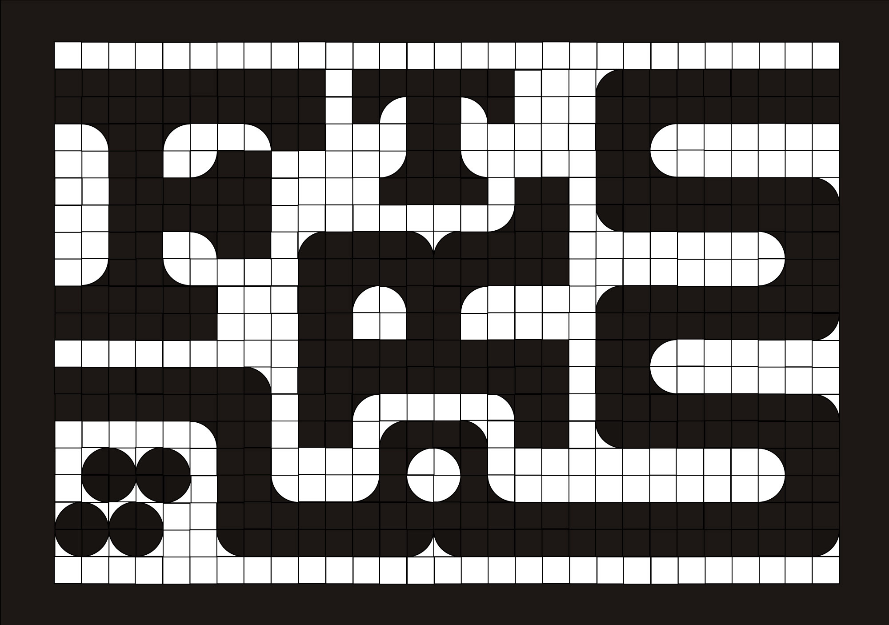

En collaboration avec l'entreprise « les Céramiques du Beaujolais »
Visuel exposé lors de la 12e Biennale Internationale Design de Saint-Étienne 2022, au sein de l'exposition « FabÉcole ». Proposition d'un carrelage typographique réalisé par l'assemblage de 4 carreaux de carrelage différents.